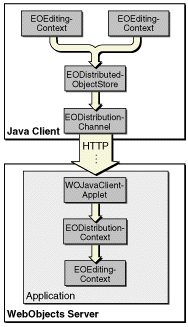

The distribution layer's client-server communication mechanism
relies on four objects: com.webobjects.eodistribution.WOJavaClientApplet, com.webobjects.eodistribution.EODistributionContext, com.webobjects.eodistribution.client.EODistributedObjectStore,
and com.webobjects.eodistribution.client.EODistributionChannel.
The flow of information works like this: The client editing contexts talk to the EODistributedObjectStore (client side), which uses a EODistributionChannel to transfer objects across the network to the WOJavaClientApplet, which uses an EODistributionContext to talk to the server-side editing context and to take care of generating responses to client requests. This flow is illustrated in Figure 4-1.
Figure 4-1 Objects in the distribution layer
Let's examine each of these objects.
EODistributedObjectStore is the parent object store for all the editing contexts on the client. It makes the client editing contexts behave like a nested editing context to the server-side editing context. Its function is similar to that of the EODatabaseContext object, which lives on the server.
EODistributionChannel is responsible for sending data from the client to the server (it actually encodes the data).
The WOJavaClientApplet object is the target of the data sent by EODistributionChannel. It forwards data from the client's EODistributionChannel to the server's EODistributionContext. It is provided to isolate the application from either deployment environment, and it also plays a large role in application startup. See "Application Startup" for more information on this object. It is also the object which embeds Java Client in a WebObjects application.
EODistributionContext has many functions: It keeps track of the state of the enterprise objects graph; it tracks which objects the client has fetched; and perhaps most importantly, it synchronizes business objects on the client and server applications.